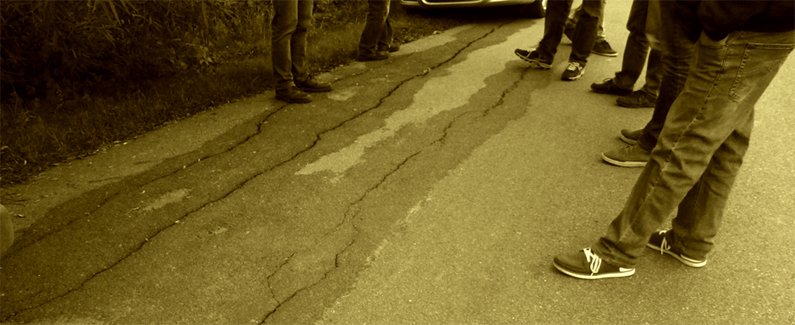

Wegebau
Straßensanierung Buchholz/ Neu Buchholz Ländlicher Wegebau
Mit nur einer Gegenstimme beschloss die Gemeindevertretung Alt Tellins am 24.7.2018 die Sanierung der gemeindeeigenen Straße zwischen Buchholz und Neubuchholz. Die Verwaltung soll einen Förderantrag über einen Betrag von 319.061,73 € erarbeitet und beim Landkreis Vorpommern-Greifswald stellen. Das Vorhaben ist für 2019 geplant. Mit einer Förderung ist eine Finanzierung des Eigenanteils aus den Bestandsvorträgen der liquiden Mittel möglich. Ca 100.000 € der Gemeinde können also ausgegeben werden, weil sie da sind. Um die Asphaltstrasse von 875 m Länge und 3,00 m Breite komplett aufzubrechen und zu beseitigen. Vor nur ca. 20 Jahren wurde sie gemäß der damals gültigen Richtlinien für den Ländlichen Wegebau grundhaft ausgebaut. Finanziert mit einer maximalen Förderung. Überbelastet durch gewachsene Agrarindustrie: „Da die Zahl der landwirtschaftlichen Betriebe in letzten Jahrzehnten rapide abgenommen hat, ist die Tendenz zur Vergrößerung der Betriebsflächen (Ackerlandgrößen) eindeutig erkennbar. Die Landwirtschaftsbetriebe sind also gezwungen, mit immer weniger materiellem und personellem Einsatz größere Mengen an Produkten zu produzieren, um auf dem Markt mithalten zu können. Dieser Effizienz- und Kostendruck hat zu Folge, dass immer größere, leistungsfähigere Maschinen verwendet werden. Hier einige Beispiele: Schlepper (Traktor) haben bis zu 360 PS und mit serienmäßiger Bereifung eine Breite bis zu 3,50 m, Erntemaschinen z.B. Mähdrescher, fast 600 PS und einen Radstand von 3,50 m... Die Folge ist, dass die Befestigung der ländlichen Wege mehr bzw. höhere Lasten aufnehmen muss… Ausblick: Es ist eine Anpassung an die modernen Erfordernisse und Funktionen des ländlichen Weges zwingend notwendig. Zudem sind die Auftraggeber dazu gehalten, an den ländlichen Wegen die gleichen Qualitätsansprüche zu stellen, wie an den Straßenbau von Bundes-, Landes- und Kreisstraßen.“ VSVI Seminar 2010 Linstow Asphaltstraßenbau 25.02.2010 Gemeinden sollen also überregionale Ansprüche erfüllen? Nach heutigem Standart muss darum nicht nur die bituminöse Befestigung aufgebrochen, sondern auch der Rückbau der unteren Tragschichten wird erforderlich. Der anschließende Vollausbau mit 3,50 m Breite zuzüglich 2 x 1,00 m befahrbarem Bankett soll dann den Vorgaben des RLW. entsprechen. Fragt sich nur, wie lange noch? Grundlegende Förderziele der integrierten ländlichen Entwicklung bestehen in der Sicherung und Weiterentwicklung der ländlichen Räume Mecklenburg-Vorpommerns als Lebens-, Arbeits-, Erholungs- und Naturräume sowie in der Verbesserung der Agrarstruktur. Wie soll das zusammenpassen? Der wachsende Verkehr durch Buchholz wird dort trotzdem auf nur 3,00 m Breite von und nach Broock unterwegs sein müssen. Und damit die marode Kreisstrasse entlasten.Tollensetaler Stimme 2018/09, S. 3

Landwege: überpflügen oder breiter asphaltieren? In den 90. -Jahren wurde „Ländlicher Wegebau“ fast flächendeckend im Osten gefördert. Zur Freude der Einwohner konnten die neuen Westautos sanfter durch die Landschaft sausen. Doch der neue Asphalt wurde der damaligen Belastung von Agrartechnik angepasst. Das waren ca. 10 t. Die moderne Landwirtschaft heute, die nicht Agrarindustrie genannt werden will, belastet inzwischen aber mit 30-40 t unsere Wege. Dass das Folgen hat, davon konnten sich die Mitglieder des sogenannten „Bauausschuss“ der Gemeinde Alt Tellin am 13. Oktober überzeugen. Seit dem der Weg von Broock nach Buchholz eine Schwarzdecke erhalten hat, fahren dort viele gerne einen kleinen Umweg über die glatte schmale Piste anstelle der kürzeren KopfsteinpflasterKreisstraße. Und begegnen dort der schweren Agrartechnik. In den Ausweichnischen wird also verstärkt gebremst und angefahren, falls sie benutzt werden. Der Ruf nach mehr Asphalt wird laut, breitere Wege für immer massivere Technik!An anderer Stelle dagegen schrumpfen unbefestigte Landwege. Sie weichen dem Acker bis sie zu schmal sind, um Bäume an ihrem Rand zu pflanzen. Und in der Einwohnerfragestunde antwortet der Bürgermeister wenn es um Flächen für Ausgleichspflanzungen geht, dass die Wege laut Karte schmaler werden und dass geprüft werden soll ob die BVVG Eigentümer der Flächen sei. Gemeint war „der lange Weg“ von Hohenbüssow zu den Wiesen des Tollensetal. „Nach Aussage von Herrn Spillner ist das Grundstück Eigentum der Gemeinde“ steht im Protokoll der GV-Sitzung. Aber dort hatte die Gemeinde schon Ausgleich gepflanzt für die Versieglung des Töpferweges in Neu Tellin. Wo sonst, wenn nicht auf Gemeindeland! Es ist kaum zu glauben, dass niemand weiß, welches Land sich im Eigentum unserer Gemeinde befindet und wieviel davon entweder überpflügt wurde oder anderweitig darüber bestimmt wird. Dort ist noch viel Platz für Bäume, Hecken und Bänke für unsere Einwohner.